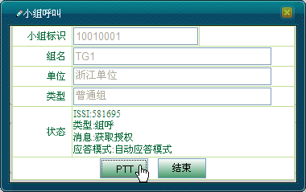
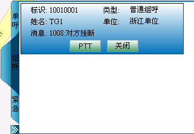

在本节，我们主要介绍以下几种小组呼叫的发起/接听方式：
例：用户24004驻留组为10010004，当前显示在地图上，状态为已注册。
1）在地图上选中用户“24004”或者单击＜组呼＞图标，右侧出现系统中存在的编组，选择组名称（例如：10010055），如图1.1所示。
图1.1 选组呼叫
2）界面会随之出现图标，调度用户按下这个图标，即发起组呼，如图1.2所示。
图1.2 发起小组呼叫
3）调度台发送语音完成后，松开图标，释放授权，呼叫工具栏如图1.3所示。
图1.3 调度台释放发射权
4）组内其他成员需要发送语音信息时，可按住终端PTT键抢占话语权，发送语音信息，调度界面如图1.4所示。完成后，释放PTT键，释放话语权。
图1.4 用户获取授权
5）若组呼中最后一个终端用户按下“挂机”键，则调度台会收到“对方挂断”的消息，此时通话结束。如图1.5所示。
图1.5 对方挂断
 说明：
说明：
在通话过程中，都会收到一系列的呼叫消息，在呼叫工具栏中的小组呼叫操作中，调度员无法结束组呼。
组呼时使用的是该终端配置的驻留组。
1）若调度台接收到用户“24004”发起的小组呼叫请求，此时地图上用户图标侧会有喇叭的图标显示，呼叫工具栏显示如图1.6所示。
图1.6 调度台组呼被叫
2）此时调度台能直接收到语音信息，当“10010004”组内成员松开PTT，释放权限，呼叫工具栏显示如图1.7所示。
图1.7 用户释放PTT键
3）调度台需发送语音时，只需按住＜PTT呼叫＞获取授权，如图1.8所示。松开＜PTT呼叫＞释放授权。
图1.8 调度台获取授权
4）若发起者结束通话或组呼中最后一个用户按下“挂机”键，则调度台会收到“对方挂断”的消息，此时通话结束。
1）在系统操作菜单栏中单击［调度功能/呼叫面板］，弹出“呼叫面板”对话框。
2）单击“呼叫业务”模块中的“小组呼叫”，弹出“小组呼叫”对话框。输入小组标识，系统自动获取对应的组名、所属单位以及小组类型。
3）调度员通过按下＜PTT＞按钮来发起组呼，如图2.1所示。
图2.1 发起小组呼叫
4）调度员释放＜PTT＞键释放发射权，如图2.2所示。按住＜PTT＞键获取授权。
图2.2 调度台释放授权
5）当调度员释放授权时，无线用户可按住＜PTT＞获取授权，发送语音信息，如图2.3所示。释放＜PTT＞则释放授权。
图2.3 用户获取授权
6）调度员可单击＜结束＞按钮结束呼叫，如图2.4所示。
图2.4 结束小组呼叫
说明：
在通话过程中，都会收到一系列的呼叫消息，在呼叫面板中的组呼中，调度台发起的组呼，必须调度台结束呼叫才是真正的结束。
1）若调度台接收到用户“1008（1008）”发起的小组呼叫请求，此时地图上用户图标侧会有喇叭的图标显示，“小组呼叫”对话框如图2.5所示。
图2.5 呼叫请求进入
2）调度台按住＜PTT＞即可获取授权进行通话，如图2.6所示。释放＜PTT＞则释放发射权。

图2.6 调度台获取授权
3）当调度台释放发射权时，组内无线用户可按住PTT键发射语音信息，释放PTT键释放授权，如图2.7所示。
图2.7 用户释放发射权
4）通话结束时，调度台可单击＜结束＞按钮结束小组呼叫。
1）若调度台接收到用户“1008（1008）”发起的小组呼叫请求，此时，在呼叫上行面板的“组呼”面板中显示如图3.1所示。
图3.1 有呼叫请求进入
2）此时调度台能直接收到语音信息，当“TG1”组内成员松开PTT，释放权限，则小组面板显示如图3.2所示。
图3.2 用户释放PTT
3）调度台需发送语音时，需按住＜PTT＞键获取授权，松开＜PTT＞键则释放授权。
4）若发起者结束通话或组呼中最后一个用户按下挂机键，则调度台会收到“对方挂断”的消息，此时通话结束，如图3.3所示。

图3.3 结束小组呼叫
1）选中呼叫上行面板中的普通组呼面板，调度员按下＜PTT＞按钮即可发起组呼，如图3.4所示。
图3.4 发起小组呼叫
2）调度台发送语音完成后，松开＜PTT＞键释放授权，如图3.5所示。组内其他成员需发送语音信息时，可按住终端PTT键抢占话语权，发送语音信息，完成后，释放PTT键释放话语权。
图3.5 调度台释放发射权
3）若组呼中最后一个用户按下挂机键，则调度台会收到“对方挂断”的消息，此时通话结束。
说明：
在呼叫上行面板中，调度员只能对已有组呼上行记录的终端发起小组呼叫。
其他发起/接听小组呼叫方法的操作步骤与通过呼叫面板发起/接听小组呼叫的操作步骤类似。
Copyright © 2012 Eastcom, Inc. All rights reserved. |
||